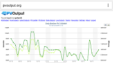

Classic Monitor
Overview
The Classic Monitor Android app displays information from your classic charge controller. Your charge controller must be connected and configured to your local network, please refer to the classic charge controller documentation provided by Midnite Solar. Your Android device must also be connected to the same local network.
With port forwarding and a DDNS service, the classic monitor can connect to your controller over the internet by adding a connection using the domain name provided by your ddns service and the public port number configured in your router. A free DDNS service is available from www.noip.com, your router must support the DDNS service you select.
This app currently supports the Classic & Classic Lite models 150, 200, 250 charge controllers, the Classic SL series is not supported since it does not have a network connection, basic support for the TriStar MPPT charge controllers is also included.
The app displays a different set of tabs depending on your configuration;
One or more classics without a WhizbangJr, the tabs are: Power | Energy | Temperature | Day Log Calendar | Day Log Chart | Hour Log Chart | Info | Messages | About
A single classic with a WhizbangJr, the tabs are: State Of Charge | Load | Power | Energy | Capacity | Temperature | Day Log Calendar | Day Log Chart | Hour Log Chart | Info | Messages | About
More than one classic with a WhizbangJr, the tabs are: State Of Charge | System | Power | Energy | Capacity | Temperature | Day Log Calendar | Day Log Chart | Hour Log Chart | Info | Messages | About
A Morningstar Tri-Star MPPT, the tabs are: Power | Energy | About
With more than one controller and a WhizbangJr, a radio button is displayed on the Calendar and Energy tabs to allow to view the energy harvested by the controller or the system (sum of all the controllers).
Navigation bar

The Navigation bar displays when you slide from the left edge of the app to the right or by tapping the "hamburger" icon on the left of the action bar.
Each controller being monitored by the app is displayed.
You can remove an entry by sliding it to the right.
You can enter a static controller address by selecting the +ADD action. This will allow you to enter the port and network name or IP address of the controller.
An orange exclamation icon will appear next to an entry when the app cannot communicate with the controller.
Settings

The settings dialog is displayed by pressing the gear icon on the top right of the action bar.
Auto detect classic: The app listens for a UDP packet on the local network for any available classic controller not yet configured when this is selected. When de-selected, each classic must be added manually using the +ADD button when the left navigation drawer is displayed.
Use Fahrenheit scale: The temperature is displayed in farenheit on gauges, calendar and charts otherwise celcius.
Show popup messages: Messages are displayed at the bottom center of the display whenever the charge state changes, when de-selecting no messages appears.
PV Output
PVOutput: When you enable PVOutput and provide a key and systemId (SID), the app uploads the daily energy (kWh) recorded by your classic to the PVoutput.org web site.
The Clear recorded logs button resets the last upload date, the app then re-uploads up to 30 days of recorded daily logs.
The app uploads the latest readings for each day since the last upload up to 30 days.
You will need to get an account at PVOutput.org to get a key and sid.
A PVOutput icon displays on the action bar that navigates to the PVOutput.org web site.
State Of Charge

The State of Charge tab is displayed when you have at least one classic configured with a WhizbangJr.
The bi-directional gauge can display the current or power, tap on the gauge to switch between the selection. A negative reading indicates that the battery is being discharged, a positive reading indicates charging.
System

The System tab is displayed when you have more than one charger controller and you have at least one classic configured with a WhizbangJr.
The Power gauge displays the amount of power being generated by the system (the sum of all controllers).
The Consumption gauge displays the amount of power being consumed from the system, this is calculated from the power generated minus the power going into the batteries.
Power

The Power tab displays the voltage and current feeding the controller from the solar panels and the voltage and current leaving the controller to the batteries and the resultant power reading for the selected controller.
The main power gauge include LED’s near the bottom of the gauge. The left LED is Aux 1 and the right LED is Aux 2
Energy

The Energy tab displays the amount of energy harvested by the selected controller today and a total amount of energy harvested by the controller since it was put into service.
When you have more than one controller and a WhizbangJr, a radio button is displayed to allow to view the energy harvested by the controller or the system (sum of all the controllers).
Capacity

The Capacity tab displays the balance of energy in amp/Hours remaining in your batteries.
Please refer to the Midnite Solar WhizbangJr documentation for more information.
Temperature

The Temperature Tab displays the temperature in either Celsius or Farenheit of the Battery, internal FET & PCB and, if you have a WhizbangJr, the shunt temprature.
Day Log Calendar

The Day Log Calendar displays the energy harvested for each day of the month along with the max pv, battery voltages, max temperature and power for the day.
Days where the system achieved float or equalize are indicated with "(Float)" and (Equalize).
If the calendar doesn't fully display on your screen, you can scroll its position by sliding the black part of the calendar.
Previous months can be viewed by sliding the grey part of the calendar up or down.
Day Log Chart

The Day Log Chart displays the same information as the calendar, A menu is at the top right of the action bar allows you to select the value charted.
Hour Log Chart

The Hour Log Chart display the information recorded by the classic for the current day, A menu is at the top right of the action bar allows you to select the value charted.
Info

The Info tab display the boiler plate information of your device along with the last VOC value of the PV array.
Messages

The Messages tab displays Informational, Warning and Error messages from your controller indicated by an icon at the start of the message.
Consumption

The Consumption gauge displays the amount of power being consumed from the system, this is calculated from the power generated minus the power going into the batteries.